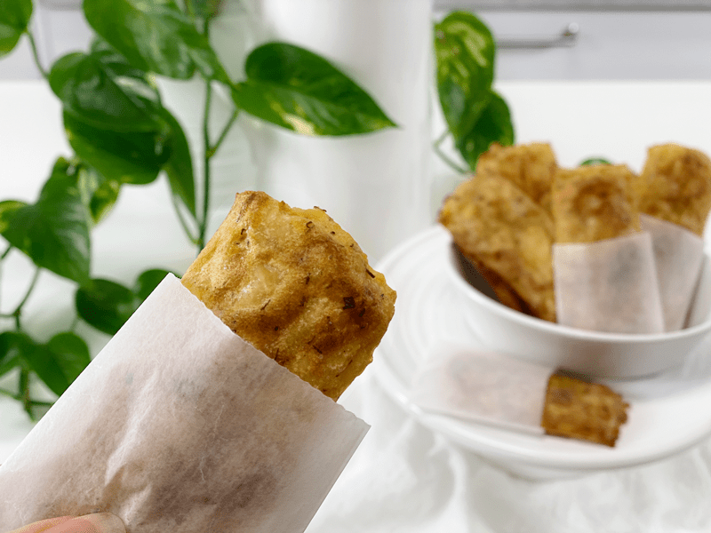

Dill and Chive Mashed Potato Hash Browns | Oil-free
The evaluation of mashed potatoes in the kitchen of Amie Sue: there I stood, bent over, my elbows resting on the countertop, my chin weighing heavy in the palms of my hands, daydreaming as I peered out the Studio Kitchen window. I smiled as the morning sun filtered through the blooming plum tree that looms in our front yard. When I look out at nature, it’s often hard to believe that our world in such turmoil–COVID-19…need I say more.

The trees are taking on a green hue, promising new life. The tulips are pushing up leaves which will soon support a beautiful flower. Nature has a way of grounding us if we just stop and take the time to breathe it all in. After gazing out the window for quite some time, my thoughts snapped back to reality. Off to the side of me sat 29 pounds of russet potatoes that were about to expire. Trees? Potatoes? Trees? Potatoes? It was a ping-pong match and in the end, the potatoes won because I wanted to honor their own life-giving force (nutrients) and not allow them to go to waste.
I started by steaming them in my Instant Pot, which was a breeze. Of course, I had to do it in batches, but while they steamed, I had the ability to prepare their supporting ingredients. I decided to make mashed potatoes with the first batch, which I did, but the creativity didn’t stop there.
In front of me sat a bowl of creamy, flavorful mashed potatoes. Though they would be delicious as-is, I wanted to take them to another level, so I thought, why not make mashed potato hash browns in the waffle machine? Without hesitation, I did, but they kept sticking and falling apart. Well, fiddlesticks, what to do? The other 27 pounds of potatoes were tapping their little toes, waiting for my undivided attention, so I quickly decided to transform the mashed potatoes–then wanna-be-waffles–into hash browns. Bingo! Nailed it. Whew, that was quite the process–but a fun one!

Batch Cooking
This recipe will make a lot of hash browns. How big or small you decide to make them will determine the amount that the recipe will yield. I used a piping bag and flat tip, making them 1.75″ x 3″ in size. After they were done baking to a golden brown color, I allowed them to cool a tad before popping them into the freezer. I will explain more in detail down below on how to properly freeze them.
Side note – If you don’t want to make hash browns out of the batter, you could easily divide the mashed potatoes in half. Enjoy one half as-is and make hash browns out of the second half. This is a great way to bring variety into your daily menu.
Make Every Bite Count
Start with organic potatoes.
- According to the USDA’s Pesticide Data Program, 35 different pesticides have been found on conventional potatoes.
- Root vegetables absorb all of the pesticides, herbicides, and insecticides that are sprayed above the ground and eventually make their way into the soil. With potatoes, however, the chemical treatment is quite extensive. During the growing season, they get treated with fungicides. Before harvesting, they get sprayed with herbicides to kill off the fibrous vines. After being dug up, they get resprayed to prevent them from sprouting. Have I shared enough?
Steam them, rather than boiling them.
- Since the potatoes’ nutrients are water-soluble, they WILL leach out of the boiled potato and into the cooking water, which is usually discarded. Steaming them removes far fewer nutrients, which will leave the potato more vitamin-filled.
 Ingredients
Ingredients
Yields 27 (1.75″x3″)
- 3 pounds peeled potatoes, steamed
- 1 cup vegetable broth or plant based milk
- 1/4 cup nutritional yeast
- 2 Tbsp onion powder
- 2 tsp garlic powder
- 1 tsp sea salt
- 1/2 tsp black pepper
- 2 Tbsp dried chives
- 1 Tbsp dried dill
Cooking the Potatoes
Option 1 -Steam Method | Stove Top
- Scrub, peel, and cut the potatoes into uniform-sized pieces (so they cook evenly).
- If the potatoes are tiny, you can steam the whole.
- Russet potatoes are my first choice due to their softer texture when cooked. I have also used a 50/50 mix of starchy R=russet potatoes and waxy, buttery Yukon golds.
- Add about one inch of water to a large pot and bring to a boil.
- Once the water comes to a boil, place the potatoes into the steamer basket and put it into the pot. Sprinkle the potatoes with the salt and cover.
- Turn the heat to medium and let steam until fork-tender, roughly 20 to 30 minutes. They must be fully cooked, or else you will have lumpy potatoes.
- Using a slotted spoon or a strainer, transfer the cooked potatoes to a glass or metal mixing bowl.
Option 2 – Steaming Potatoes | Instant Pot
- Wash potatoes, peel (if desired), dice into uniform sizes (so they cook evenly).
- If the potatoes are really small, you can steam them whole.
- I like to keep my diced potatoes in water while I am dicing the others to prevent discoloration. Drain them when ready, then steam.
- Add 2 cups of water to the Instant Pot, load the steaming basket with potatoes, and put it into the pot.
- You don’t want the potatoes sitting in water. If using a 6-quart unit, use only 1 cup of water.
-
Attach and secure the lid and turn the pressure valve to the “Sealing” position.
-
Press “Manual,” place on high pressure, and adjust the cooking time for 7 minutes.
-
When machine beeps, do a quick release by turning the valve to the “Venting” position. Be very careful of the steam shooting out of the valve.
Assembly
- Preheat the oven to 400 degrees (F) and line a pan with parchment paper.
- With an electric hand mixer (or handheld potato masher) gradually mix the potatoes to a large mixing bowl along with the vegetable broth, nutritional yeast, onion powder, garlic powder, salt, pepper, chives, and dill. Mix until a smooth and fluffy texture is reached. Set aside.
- Be careful that you don’t overmix the potatoes, or they can become gummy.
- I used oat milk as my main liquid.
- You can leave the batter more on the lumpy side to create dimension and texture in the hash browns. If you do, you won’t be able to use the piping tip. Instead, you will need to spread them out manually.
- Using a piping bag and flat tip, place the tip on the parchment paper, give the piping bag a firm and even pressing while dragging it along the paper to the desired length. Where you pipe them is where they bake. You can’t move them around before baking.
- If you don’t have the flat piping tip or if you wish to create chunkier hash browns, place a few spoonfuls on the parchment paper and shape into the desired size.
- Bake for 40 minutes or until golden brown and cooked through.
- For you first try, watch the hash browns to see how long your oven takes since running hotter or cooler. Document the time for the next batch you make.
Batch Freezing
These hash browns can be made in advance and frozen for future meals. I recommend flash freezing them by laying them in single layers on a baking sheet, slip into the freezer, and once frozen place them in an airtight freezer-safe container. This method will prevent them from sticking to one another.
If your freezer space is limited for multiple baking trays, place a sheet of parchment paper on top of the first layer and build layers that way. Once fully frozen, remove the hash browns from the baking trays and place them in a freezer-safe container or bag. Label, date, and place back in the freezer.
When you or your family members are ready to enjoy a hash brown or two or three, you can pop them in the toaster. If you don’t have a toaster, you can reheat them in the oven at 350 degrees (F).
© AmieSue.com